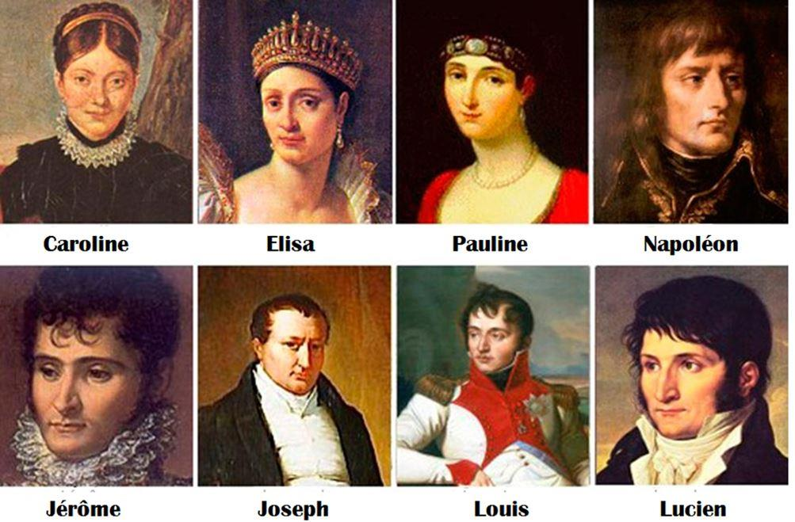
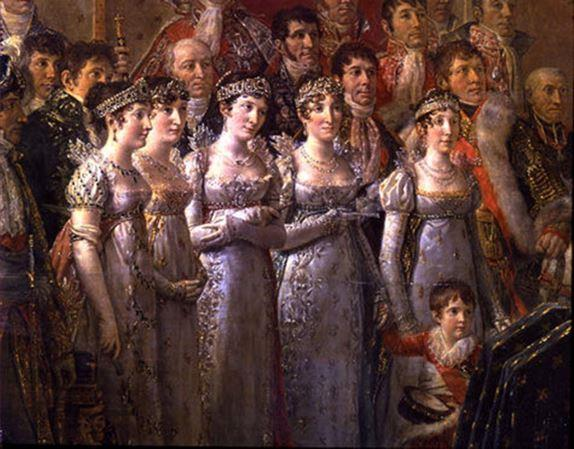

Nous avons déjà chroniqué un livre de Vincent Haegele1 consacré à « Trois destins d’Ancien Régime », que nous avions grandement apprécié. Avec cette étude intitulée « Napoléon et les siens », Haegele nous permet de suivre l’épopée impériale sous l’angle familial du clan Bonaparte.
Très souvent, les passionnés d’histoire napoléonienne suivent et étudient celle-ci en ne prenant en compte que la vision de l’acteur principal de cette tragédie, à savoir Napoléon.
En agissant ainsi, ils se placent d’un point de vue partisan. En effet, ils peuvent oublier que les autres héros de l’épopée (frères et sœurs de l’Empereur et les maréchaux par exemple) disposent aussi d’avis différents et de leur libre arbitre. En couvrant d’un voile les pensées des acteurs de l’époque ou en occultant leurs contextes forcément particuliers, les historiens professionnels et amateurs passent sûrement à côté de l’essentiel et commettent irrémédiablement des erreurs d’analyse. L’intérêt de cette passionnante lecture de Haegele réside donc dans ce point précis : suivre l’évolution d’une famille française dans la tourmente révolutionnaire, en prenant en compte chacun de ses membres. N’oublions pas que les Bonaparte ont présidé aux destinées de la France voire de l’Europe.
Dans la vie d’un individu, qu’est-ce qui compte le plus ? Nous citons Haegele qui écrit dès la première page : « Tout oppose les partisans et les détracteurs du système né de la Révolution, excepté ce petit air : passent les régimes, la famille demeure quoiqu’il arrive ». Il s’agit d’une loi anthropologique non écrite mais fondamentale qui remonte à la nuit des temps. Comment juger ou plus exactement comprendre Napoléon et sa famille ? L’auteur écrit : « Que n’a-t-on pas dit et écrit sur la famille de l’homme dont le destin stupéfia le monde et changea radicalement le paysage européen, qui donna à la France des institutions pérennisées, une monnaie, un code ? À peu près tout et son contraire, mais une image domine toutefois, celle d’un clan avide d’argent, d’honneurs immérités et de dépouilles prélevées sur les cadavres d’antiques monarchies ».
Le tableau paraît tranchant mais, cependant, reflète-t-il réellement la vérité ? Haegele poursuit son propos de la manière suivante : « Des frères dissipateurs, des sœurs ambitieuses et dépravées, des épouses indignes, des cousins sans scrupules et leurs entourages de courtisans… tous traîtres, dilapidateurs et voleurs : voilà le portrait peu flatteur que beaucoup n’ont pas hésité à reprendre, à noircir à volonté ».
Pourtant, comme le précise l’auteur, l’un des grands moralistes du siècle Joseph Joubert avait écrit : « Il est impossible de manier les affaires sans se salir de cupidité ». Nous le laissons libre de son propos. Le plus important, nous semble-t-il, n’est pas dans la moralité ou l’immoralité de la famille Bonaparte. La question principale n’est-elle pas de savoir quelle place il faut accorder à la famille de Napoléon tout au long de son illustre et incomparable carrière ?
À ce sujet, Haegele estime que « dès le commencement, le grand homme de son siècle est attaquable à travers sa famille : la publicité qui est faite de ses infortunes conjugales, les turpitudes avérées ou non de ses frères sont là pour mettre en péril un édifice aussi colossal que fragile, dont la légitimité est contestée. S’ajoute enfin la douloureuse question de l’hérédité et de la survivance. Voilà la faille. » Indépendamment du sujet de la transmission du pouvoir, Napoléon a toujours été considéré comme un parvenu par les vieilles têtes couronnées, même si le Pape Pie VII participa à son sacre.
De fait, Napoléon au début de sa carrière souhaite associer sa famille à sa réussite, à ses projets, à ses espérances, d’autant qu’il s’affirme vite comme le chef après la mort de leur père Charles, au grand désespoir de son frère aîné Joseph. Dans les biographies consacrées à Napoléon, Charles, se voit décrit comme un homme absent, lointain voire très effacé. Pourtant, c’était un père aimant ses enfants et un époux tendre, nonobstant des écarts conjugaux réputés. Très vite, Charles a compris que fonder ses espoirs sur une Corse indépendante relevait d’une chimère. Haegele évoque dans de longues pages le contexte géopolitique et intellectuel de la Corse et de l’Europe. Il précise également que les choix décisifs de Charles permettent à ses deux aînés d’obtenir une bourse et de suivre une scolarité sur le continent. La suite est connue…

Frères et sœurs de Napoléon Bonaparte
Une fois arrivé au pouvoir, Napoléon conscient des forces politiques en présence décide de rétablir la monarchie à son profit. Haegele note : « Bien évidemment, nul ne peut construire une dynastie sans compter sur l’aide de son propre sang et c’est là le nœud gordien de toute l’entreprise complexe et incomparable de Napoléon Bonaparte : ses frères et sœurs ont accompagné, soutenu et parfois déterminé ce processus de conquêtes et de constructions civiles et militaires, partageant dès le début les douleurs de l’exil, la remise en cause systématique de leur place dans la société et les blessures d’amour-propre ». Napoléon avait acquis sa gloire par ses propres mérites, mais ses frères et sœurs pouvaient-ils en dire autant ? Il y a peut-être ici un des paramètres qui expliquent la chute finale de l’aventure napoléonienne.
Ses frères et sœurs, et nous pensons ici au monologue de Figaro, ne s’étaient-ils pas donnés que la peine de naître ? Louis, un des petits frères de Napoléon, refusait les honneurs et les prébendes en justifiant son choix par la réponse suivante : « Je n’ai pas mérité cela… »
Cependant, Haegele précise « qu’il y a une mystique du pouvoir indéniable, qu’aucune Révolution ne pourra jamais abolir, et la force des Bonaparte est de l’avoir instinctivement mise en œuvre dès les premiers succès en Italie. C’est la perfection fine de cette mystique qui a permis aux Bonaparte de se hisser au plus haut niveau avec une aisance qui a confondu leurs contemporains, et confond encore aujourd’hui les historiens ».
Tout au long de son entreprise, pour convaincre sa fratrie de la légitimité de ses actions, Napoléon parle toujours de « son système » sans vraiment jamais le définir.
Toutefois, les Bonaparte ont conquis le pouvoir, et certains oublient que les succès de Napoléon, notamment le coup d’État du 18 Brumaire, ont parfois dépendu de ses frères et sœurs…
Haegele nous propose une histoire de l’épopée napoléonienne à la fois originale et pertinente, car elle met en avant des analyses nouvelles sur le système familial impérial loin des images noires et dorées auxquelles certains semblent habitués. Pour finir, nous conclurons par une citation de Napoléon qui nous invite à méditer sur les destinées des Hommes : « On peut s'arrêter quand on monte, jamais quand on descend ».
F.A.
(1) Des hommes d’honneur par Vincent Haegele, chronique littéraire publiée par l’auteur
Partager cette page